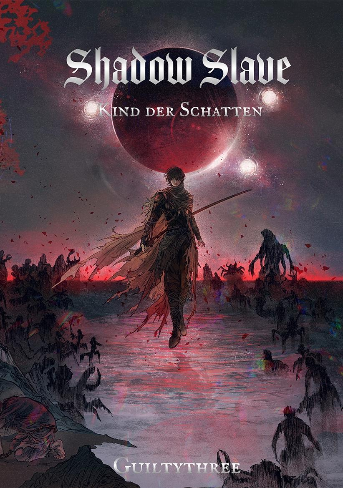
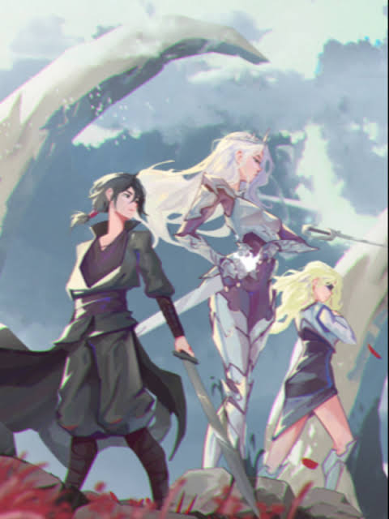

『Shadow Slave』のメインキャラクターはサニーです。サニーはとても貧乏(びんぼう)です。ある日、悪夢(あくむ)のせかいに行きます。こわい大(おお)きなばけものとけんかします。悪夢のせかいのおわりの後でサニーはとくべつなちからをもらいます。でも今サニーはうそをつけない人になりましたから、とてもおかしい話(はなし)になります。

おもしろいし、おかしいし、かっこいいし、これは僕の好きなほんです。せかいとキャラクターはおもしろくていいと思います。それからこのほんはすごくかんどうします。たくさんやばいしゅんかんがある。「キャラクターは死にますか？」と思います。たくさんなぞとひみつもあります。時間があったら、読んでみてください。
- 貧乏(びんぼう)
- poor
- 悪夢(あくむ)
- nightmare
- とくべつなちから
- special power
- おかしい
- funny / strange
- なぞ
- mysteries
END OF ENTRY 002■